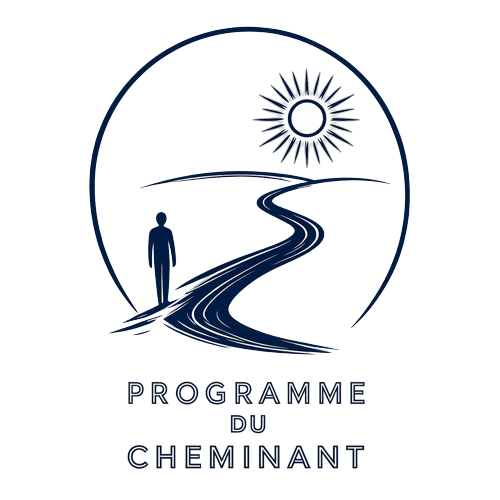

Le Chemin existe.
Encore faut-il consentir à le prendre.
Le Programme du Cheminant est une démarche personnelle
d’Accomplissement
fondée sur la liberté, la responsabilité,
l’expérience vécue,
la progression et l’engagement envers soi-même.
Rien ne peut être transmis à celui qui ne décide pas d’entrer lui-même dans le Chemin.
Nom du compte : programme
Mot de passe : programme